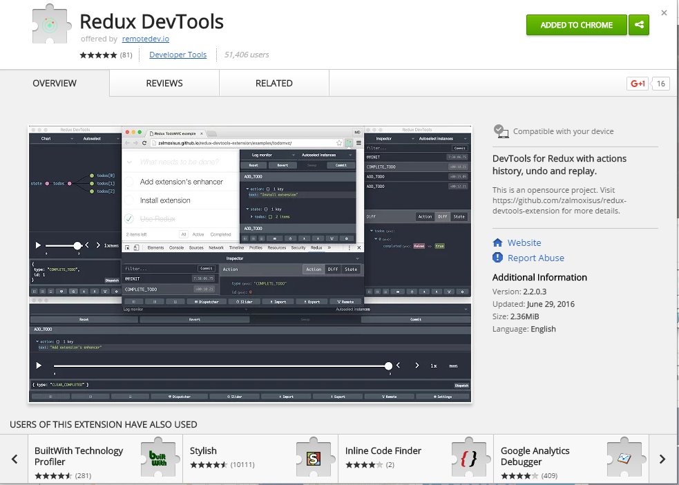

[< Prev](./do-redux.html) | [Home](./) | [Next >](./real-data.html)
#Time travel debugging
#####Install the chrome extention for react
[</img>](https://chrome.google.com/webstore/detail/redux-devtools/lmhkpmbekcpmknklioeibfkpmmfibljd)
<br />
[< Prev](./do-redux.html) | [Home](./) | [Next >](./real-data.html)